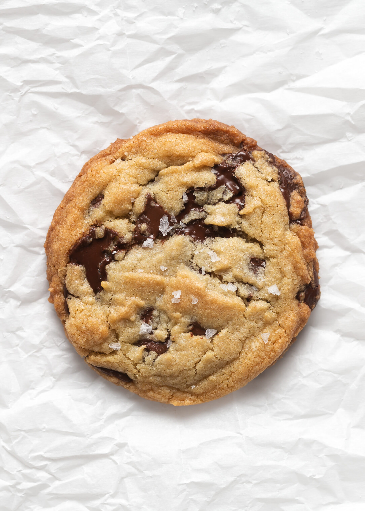

DESCRIPTION
Every baker needs an incredible chocolate chip cookie recipe in their back pocket and this is mine. I’m declaring this the world’s best chocolate chip cookie recipe and it comes straight from the pages of my debut cookbook, Stuffed: The Sandwich Cookie Book. Before gracing the pages of my first cookbook, I tinkered with this recipe for many, many months because I wanted it to be nothing short of perfect. I’m so thrilled to finally share my absolute favorite cookie with you!
I’ve gotta say, this cookie recipe was worth waiting for! It’s simply the best. Crisp edges, chewy middles and layer upon layer of gooey, melted chocolate, this cookie checks ALL the boxes! Trust me…one bite and this beloved recipe will be on repeat in your kitchen. (confession: I make these cookies at least once a week! They’re just that good!!)
INGREDIENTS
These cookies are super easy to make using all the standard chocolate chip cookie ingredients you probably already have in your pantry. Here’s what you’ll need:
- Flour – we’re using regular all-purpose flour to give these cookies structure and chew. For best results, use a kitchen scale to weigh the flour.
- Butter – no need to melt your butter or wait for it to reach room temperature. This recipe uses cold, cubed butter straight from the fridge so you can whip up a batch of warm ccc’s whenever the craving strikes!
- Sugar – a combination of granulated and light brown sugar give these cookies sweetness and texture
- Eggs – an extra egg yolk makes these cookies perfectly soft and chewy
- Baking soda – make sure your baking soda is fresh!
- Cornstarch – just a pinch for a soft and tender texture. Don’t skip it!
- Vanilla – that’s not a typo. A full tablespoon of vanilla adds depth of flavor. Be sure to use the good stuff and steer clear of anything labeled “artificial”!/li>
- Salt – a dash of salt in the dough and a sprinkle on top helps to enhance the flavors of the other ingredients./li>
- Chocolate chips – I like to use LOTS of chocolate chips for the ultimate ooey, gooey cookie. I find that mixing a few different varieties and sizes of chocolate chips gives them incredible taste and texture. I’m currently obsessed with this combo: Ghirardelli semi-sweet chocolate chips mixed with Ghirardelli 60% bittersweet and Trader Joes’s semi-sweet chocolate chips. I use about 1/3 of each.
HOW TO MAKE CHOCOLATE CHIPS COOKIES
You won’t believe how simple these cookies are to make! Just grab your cold butter straight from the fridge and whip up the dough while you preheat your oven. Follow this step-by-step guide and check the recipe card below for the complete ingredient list and detailed instructions. Be sure to follow the recipe to a T for the best chocolate chip cookies.
- In the bowl of a stand mixer fitted with the paddle attachment, add the cold, cubed butter, granulated and light brown sugar.
- Beginning on low speed, beat the butter and sugars together. Gradually increase the speed and continue creaming the butter and sugars together for 4 to 5 minutes. There should be no visible chunks of butter in the bowl. Scrape down the sides of the bowl.
- Add the egg and egg yolk, one at a time. Mixing for about 15 to 20 seconds after each addition. Scrape down the sides of the bowl and add the vanilla. Mix on low speed until incorporated.
- In a separate bowl, whisk together the flour, baking soda, cornstarch and salt. Add the dry ingredients to the mixture in two additions. Mix on low speed to combine and scrape down the sides of the bowl as needed.
- Do not overmix the dough – stop when a few streaks of flour remain. Scrape down the sides of the bowl once more.
- Add the chocolate chips all at once, mixing until just combined. Reserve a few tablespoons of chocolate chips to place on top of the cookies if desired.
- Bake one cookie sheet at at time on the center rack in a 375°F oven. After about 6 minutes, open the oven and carefully lift the cookie sheet about 4 inches off the rack. Drop it firmly back onto the rack. This helps the cookies to spread and creates those delicious puddles of melted chocolate throughout the cookie. Close the oven door and continue baking for 2 to 3 more minutes. The trick to getting that delicious soft and chewy texture is not to over bake the cookies. I never bake the cookies more than 9 minutes.
- Carefully remove the cookies from the oven and if they are mounded on top, drop the cookie sheet firmly on the countertop (place a cooling rack or kitchen towel underneath) once more to help the cookies spread before cooling. Allow the cookies to cool on the baking sheet for about 5 minutes before transferring to a cooling rack. Sprinkle with flakey sea salt before serving, if desired.
HOW TO SCOOP COOKIE DOUGH
You might be tempted to eyeball the scoops, but for picture perfect, evenly baked cookies, try these tips!
- For best results, use a cookie scoop and a digital kitchen scale to portion out the dough into equal scoops. For this recipe, I make the cookies bakery-style big using a large scoop to divide the dough into 2 – 2.5 ounce balls.
- Place the cookie dough balls onto a parchment lined baking sheet, about 2 to 3 inches apart to allow for spreading in the oven. If freezing the cookie dough, place the scoops on a parchment lined baking sheet in the freezer for about an hour, or until firm. Transfer the cookie dough balls to a large freezer bag and freeze for up to 3 months.
- If baking the cookies right away, top each ball with a few extra chocolate chips. Be careful not to flatten the dough.